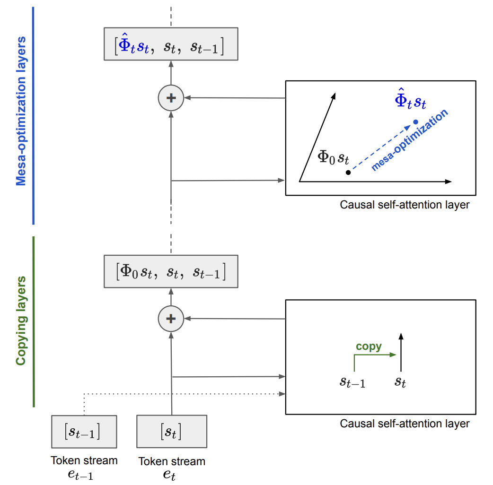
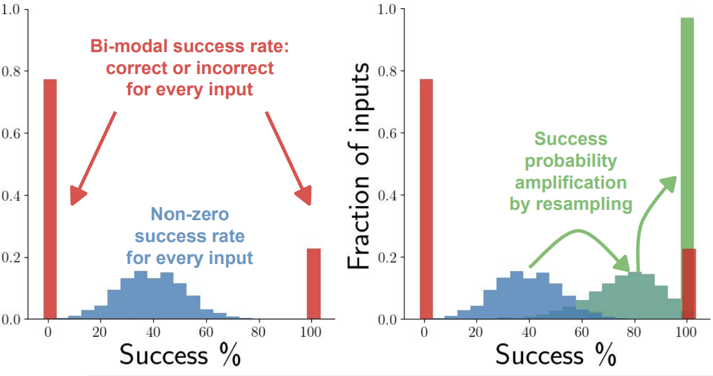
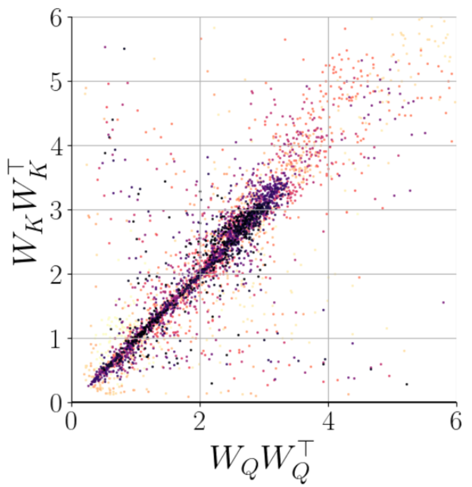

Johannes von Oswald
I am a research scientist at Google in Zurich,
working with Blaise Agüera y Arcas and
João Sacramento in the
Paradigms of Intelligence Team.
Until 2023, I was a PhD student supervised by Angelika Steger and
João Sacramento at the Institute of Theoretical Computer Science, ETH Zurich.
My research focuses on how and what machines, in particular neural networks, learn from data. One important goal is to allow these learning algorithms to generalize broadly and solve novel complex tasks.
Therefore, I am heavily inspired by (meta-) learning within a large, possibly open-ended, enviroment.
Currently, I investigate how state-of-the-art neural network models, in particular transformer-based large language models, can move beyond pattern matching to learn and implement algorithmic-like solutions.
This led me to work on mesa-optimization: the emergence of optimization algorithms within neural networks!
In recent work, we showed that gradient descent-based algorithms
can be implemented within the activations of transformers by simple autoregressive outer-optimization. This allows transformers to learn and
generalize at test time to novel data provided in-context. This led to the development of a novel recurrent neural
network architecture, the MesaNet, which we tested on language modeling at scale.
Recently, I became more intrigued by hardware, and I started working with Charlotte Frenkel on exciting ideas to run neural networks on the hardware substrates they deserve!
I am always interested in scientific collaborations, particularly in helping students with their research. If you want to collaborate, please reach out via social media below or email at jvoswald[at]google.com.
News
- May, 2026 - I gave a talk about our mesa optimization work at Tufa labs, Zurich!
- December, 2025 - Tristan Torchet is joining Google PI as a student researcher.
- October, 2025 - Marwa Abdulhai is joining Google PI as a student researcher.
- October, 2025 - Our work was discussed by Andrej Karpathy on the Dwarkesh Patel Podcast here!
- July, 2025 - Nino and me are hosting a student researcher - please apply here.
- June, 2025 - Nino and me presented MesaNet at the ASAP seminar.
- June, 2025 - João gave a talk at the Kempner Institute (Harvard).
- April, 2025 - Yassir gave an oral presentation at ICLR 2025.
- March, 2024 - Our work was discussed on the Dwarkesh Patel Podcast here.
- December, 2023 - I succesfully defended my PhD thesis!
- December, 2023 - Talk at Alignment Workshop in New Orleans about mechanistic interpretability.
Research Highlights
-
MesaNet: Sequence Modeling by Locally Optimal Test-Time Training
Johannes von Oswald*, Nino Scherrer*, et al.
ArXiv 2025
Paper Code Colab
-
Uncovering Mesa-Optimization Algorithms in Transformers
Johannes von Oswald*, Maximilian Schlegel*, et al.
ICLR 2024, Understanding of Foundation Models (Oral)
Paper Code
-
Learning Randomized Algorithms with Transformers
Johannes von Oswald*, Seijin Kobayashi*, Yassir Akram*, Angelika Steger
ICML 2025, Oral Presentation
Paper
-
Weight decay induces low-rank attention layers
Seijin Kobayashi, Yassir Akram, Johannes von Oswald
NeurIPS 2024
Paper
-
Transformers learn in-context by gradient descent
Johannes von Oswald, Eyvind Niklasson, et al.
ICML 2023, Oral Presentation
Paper Code